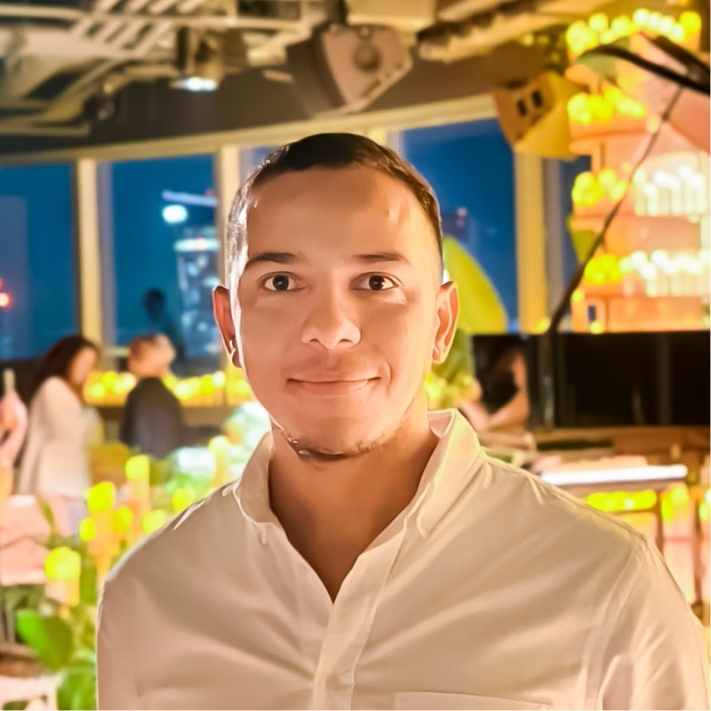
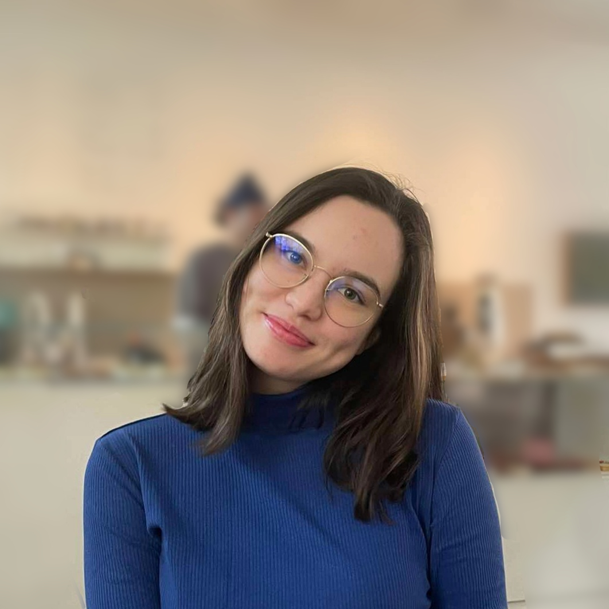

We study how proteins fold into knotted topologies, how the cell degrades them, and how misfolding leads to disease. Our work bridges computational modelling, biochemistry, and single-molecule experiments.
Research Focus
Our laboratory investigates the topology, stability, and degradation pathways of proteins — from the moment a chain leaves the ribosome to its degradation.
The protein folding remains one of biology's deepest questions. We combine single-molecule experiments and computational simulations to map energy landscapes and intermediate states in topologically complex proteins.
We study how and why proteins adopt knotted backbones — one of nature's most surprising topological structures. Using molecular dynamics simulations, we characterise knotting pathways, stability, and functional relevance across diverse protein families.
We investigate the mechanisms by which the AAA+ unfoldases handle topologically complex substrates. Understanding, in vitro and in silico, how the knotted proteins has direct implications during the protein degradation.
Active Projects
From NCN funded research to applied collaborations with partners, our projects cover the full spectrum.
A computational and experimental investigation of the degradation of novel knotted proteins. We are building a curated protein degrdation model to guide wet-lab validation.
A systematic computational and experimental survey of degrons of ATP-dependent proteases. We are developing AI-method to design new degrons based on a survey of existinging data.
We investigate how chaperones such as GroEL/GroES modulate the folding routes to knotted proteins, using single-molecule optical tweezers and all-atom and coarse-grained simulations in parallel.
Our People
A diverse, international team united by curiosity and rigour.

NCN grantee. Expert in molecular topology, protein degradation, molecular biophysics, and molecular dynamics simulations.

Biophysics, University of Warsaw
Biotechnology, University of Warsaw.
Biology, University of Warsaw.
Chemistry, University of Warsaw.
Selected Works
A selection of our key publications. For the full list, see our Google Scholar.
Get in Touch
Join the Lab
We are always looking for talented, motivated scientists. We value diversity and strongly encourage applications from under-represented groups in STEM.